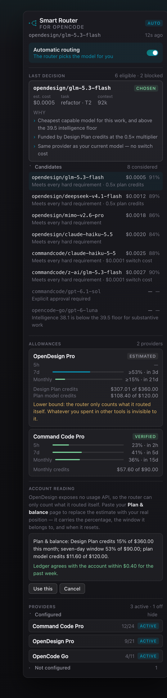
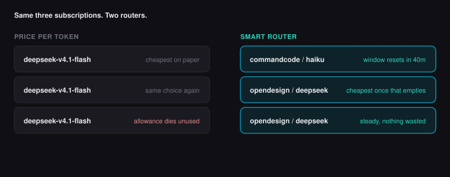
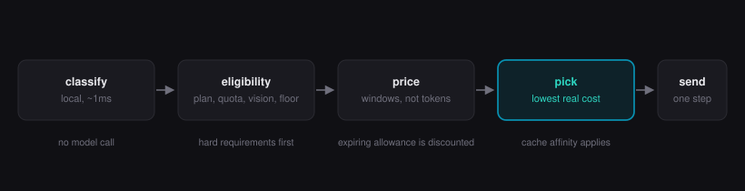
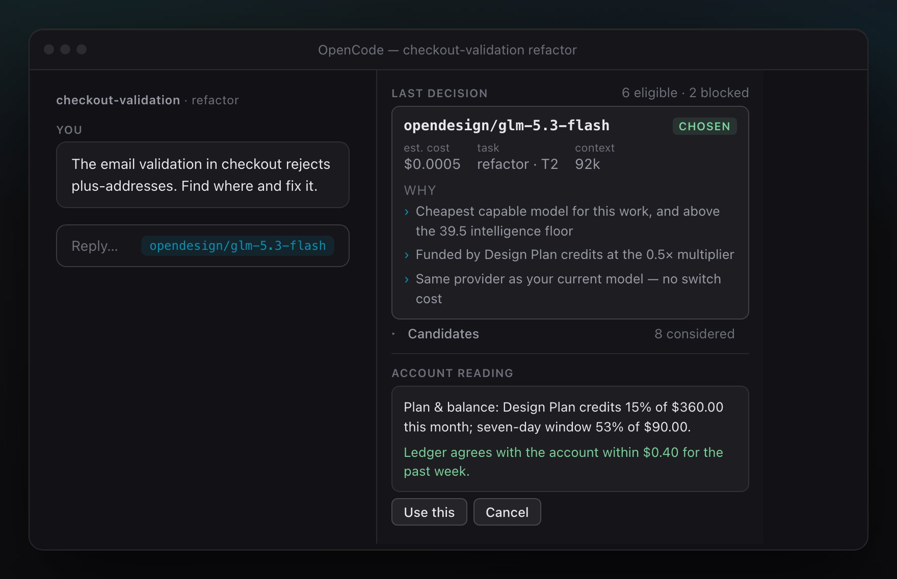
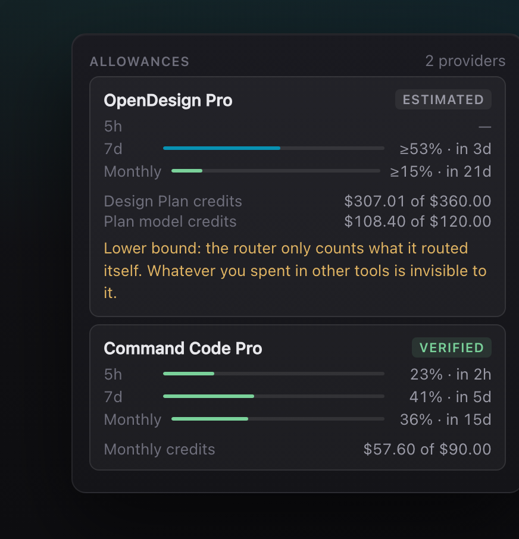
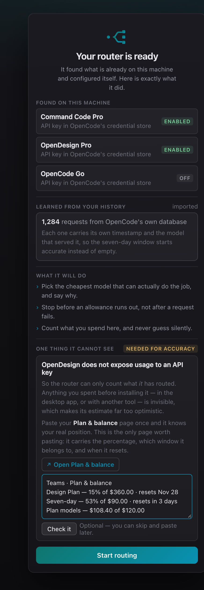

Routes by your plan, not a price list.
Every other router asks what a token costs. This one asks what your subscription allows, which window is about to expire, and what you have already paid for.
curl -fsSL https://raw.githubusercontent.com/qadanm/opencode-smart-router/main/install | bash
Inside OpenCode
A panel that explains every choice it makes for you
The router lives beside your session. When it picks a model, it shows the choice, the price, and the reasons — and what is left in every allowance it is spending against.

The problem
A subscription is not a price per token
You buy windows that expire. A five-hour window inside a seven-day window inside a monthly ceiling. Some windows are metered per model and do not pool. A few plans run two credit pools that draw at different rates. Price-per-token routing cannot see any of it, so it keeps choosing the same model while allowance you already paid for expires unused.

How it decides
Classify, filter, price, pick
Classification is local and takes about a millisecond. No model call is spent deciding which model to use.
Classify
Reads structure, not wording: scope, attachments, agent, context size, recent failures.
Filter
Drops anything a plan cannot fund, needs vision the model lacks, or sits below the intelligence floor.
Price
Costs the allowance a request consumes in the windows that actually get charged.
Pick
Lowest real cost, with a margin for staying put so a warm prompt cache is not thrown away.

Two things no other router shows you
Why it chose that. What is left to spend.


First run
Zero decisions during setup
The router reads what is already on the machine, configures itself, and reports what it did. One optional paste makes the estimates exact. You press one button.

- Detected, not asked. Credentials are found in OpenCode's own store; nothing to configure.
- Day one is not a guess. Your request history is imported so the seven-day window starts accurate.
- One honest gap, named. OpenDesign exposes no usage API — one paste of the Plan & balance page closes it.
- Then one button: Start routing.
Guardrails
It spends what you approved, and nothing else
No surprise purchases
Never buys credits, changes billing, or enables top-ups. Ever.
Premium stays locked
Premium quota needs a one-shot approval or a budget you set yourself.
Fails closed
When no qualified route exists, the current model stays and the reason is recorded.
Missing quota is not a green light
An unprobed provider is refused rather than assumed to have room.
Local by default
Classification and ledger stay on your machine. Prompt text storage is off.
Reversible install
One command removes it and restores the exact prior config.
Control
Everything is a slash command
No GUI required, and routing keeps working with the panel closed.
| Command | What it does |
|---|---|
/router-status | Runtime mode, model, tier, quota, warnings |
/router-why | Why this model, for the prompt you just sent |
/router-explain | Last decision, signals, candidate costs, reasons |
/router-report | Usage, switches, premium prevention, retries, latency |
/router-mode | efficiency, balanced, or premium |
/router-dry-run | Explain decisions without changing the model |
/router-pin | Pin a model for this session |
/router-auto | Clear a manual override, resume automatic routing |
Get started
One command, then restart OpenCode
It validates the source, runs the full suite, backs up your config, installs and confirms the bundle loads. Every check runs before anything is written.
curl -fsSL https://raw.githubusercontent.com/qadanm/opencode-smart-router/main/install | bash